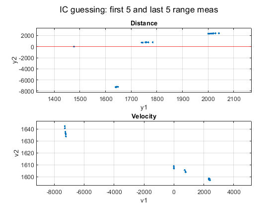

Contents
set 4, prob 4
clear; clc
load radarmeasdata_missile_new.mat
global la lb
global rhoahist thetaahist rhobhist thetabhist
la = 3.5e5;
lb = 4.0e5;
sigma_rhoa = 10;
sigma_rhob = 30;
sigma_thetaa = 0.01;
sigma_thetab = 0.03;
Warning: The value of local variables may have been changed to match the
globals. Future versions of MATLAB will require that you declare a variable to
be global before you use that variable.
Warning: The value of local variables may have been changed to match the
globals. Future versions of MATLAB will require that you declare a variable to
be global before you use that variable.
Warning: The value of local variables may have been changed to match the
globals. Future versions of MATLAB will require that you declare a variable to
be global before you use that variable.
Warning: The value of local variables may have been changed to match the
globals. Future versions of MATLAB will require that you declare a variable to
be global before you use that variable.
Initial condition guessing
xg0_arr = [];
for i = 1:5
for f = 23:28
xg0 = find_xg0(rhoahist, rhobhist, thist, i, f);
xg0_arr = [xg0_arr; xg0'];
end
end
y = [xg0_arr(:,1), xg0_arr(:,3)];
ftitle = 'IC guessing: first 5 and last 5 range meas';
figure('name', ftitle);
subplot(2,1,1)
plot(y(:,1), y(:,2),'.')
grid on; hold on;
yline(0, 'r')
xlabel('y1'); ylabel('y2');
bigger_ylim; bigger_xlim
title('Distance')
subplot(2,1,2)
plot(xg0_arr(:,3), xg0_arr(:,4), '.');
grid on; hold on;
xlabel('v1'); ylabel('v2');
bigger_ylim; bigger_xlim
title('Velocity')
sgtitle(ftitle);
Warning: Imaginary parts of complex X and/or Y arguments ignored.
Warning: Imaginary parts of complex X and/or Y arguments ignored.

this one looks good
xg0_OG = find_xg0(rhoahist, rhobhist, thist, 3, 25)
xg0 = xg0_OG;
xg0_OG =
2019.29620390645
899.18143927834
2349.46128871635
1597.49910053977
Gauss-Newton method
disp('Part b: Using just rho data from both radars: ')
meas_data = 'rho';
[Ra, zhist] = build_Ra_z(meas_data, thist, sigma_rhoa, sigma_rhob, sigma_thetaa, sigma_thetab);
[xg0_soln_rho, Pxx_rho] = GN(xg0_OG, thist, zhist, Ra, meas_data)
disp('Part c: Using both rho and theta data from both radars: ')
meas_data = 'both';
[Ra, zhist] = build_Ra_z(meas_data, thist, sigma_rhoa, sigma_rhob, sigma_thetaa, sigma_thetab);
[xg0_soln_both, Pxx_both] = GN(xg0_OG, thist, zhist, Ra, meas_data)
disp('The bearing data made the error covariance slightly smaller (slightly improved) for the Gauss-Newton approximated solution. ')
disp('Norm of error covariance using just range data: ')
disp(norm(Pxx_rho))
disp('Norm of error covariance using range and bearing data: ')
disp(norm(Pxx_both))
disp('Worth noting is the difference between the range-only and the range-and-bearing solution is: ')
disp(xg0_soln_both - xg0_soln_rho)
disp('The largest difference, 1.62 meters, is not extremely large but can make a difference especially when trying to predict the dynamics of the missile.')
disp(' ')
disp('Part d: Using just theta from radar A: ')
meas_data = 'theta_a';
[Ra, zhist] = build_Ra_z(meas_data, thist, sigma_rhoa, sigma_rhob, sigma_thetaa, sigma_thetab);
[xg0_soln_theta_a, Pxx_theta_a] = GN(xg0_soln_both, thist, zhist, Ra, meas_data)
x = sym('x', [4 1]);
syms la_sym lb_sym tj g
y1 = x(1) + x(2)*tj;
dy_1a = la_sym - y1;
dy_1b = lb_sym - y1;
dy_2 = x(3) + tj * x(4) - 4.9*tj^2;
h_rhoa = sqrt( dy_1a^2 + dy_2^2 );
h_rhob = sqrt( dy_1b^2 + dy_2^2 );
h_thetaa = atan2( dy_2, dy_1a );
h_thetab = atan2( dy_2, dy_1b );
Hhist_j = matlabFunction( [ jacobian(h_thetaa, x) ] );
H = [];
for j = 1:length(thist)
H = [ H; Hhist_j(la, thist(j), xg0_soln_both(1), xg0_soln_both(2), xg0_soln_both(3), xg0_soln_both(4)) ];
end
disp('Bearing-only jacobian (H) using "best" estimate from part c:')
H
fprintf('The rank of H from bearing-only from radar A data = %d \n', rank(H))
disp('Technically according to Matlab output, H is full rank which implies that the initial position and velocity estimate are observable.')
disp('However, the elements of H that were derived with respect to position are nearly 0. You can get velocity but not position from bearing (angle) measurements.')
disp('If the position differential elements of H were to go to 0, then the rank of H would be 2.')
disp(' ')
disp('Part e: bearing-only estimate error covariance')
disp('The estimation of the solution using just theta from radar A is useless.')
disp('The diagonal elements of the estimation error covariance are much larger than the diagonal elements of the measurement covariance.')
disp('See the ratios of the diagonal elements below: ')
Pxx_theta_a(1,1) / sigma_rhoa^2
Pxx_theta_a(2,2) / sigma_thetaa^2
Pxx_theta_a(3,3) / sigma_rhob^2
Pxx_theta_a(4,4) / sigma_thetab^2
Part b: Using just rho data from both radars:
subfunctions
function h = h_NL(x, t, meas_data)
global la lb
h = [];
for i = 1:length(t)
y1 = x(1) + x(2)*t(i);
dy_1a = la - y1;
dy_1b = lb - y1;
dy_2 = x(3) + x(4)*t(i) - 4.9*t(i)^2;
h_rhoa = sqrt( dy_1a^2 + dy_2^2 );
h_rhob = sqrt( dy_1b^2 + dy_2^2 );
h_thetaa = atan2( dy_2, dy_1a );
h_thetab = atan2( dy_2, dy_1b );
switch meas_data
case 'rho'
h = [h; h_rhoa; h_rhob];
case 'theta_a'
h = [h; h_thetaa];
case 'both'
h = [h; h_rhoa; h_thetaa; h_rhob; h_thetab];
end
end
end
function H = Hhist(x, thist, Hhist_j, meas_data)
global la lb
H = [];
for j = 1:length(thist)
switch meas_data
case 'rho'
H = [ H; Hhist_j(la, lb, thist(j), x(1), x(2), x(3), x(4)) ];
case 'theta_a'
H = [ H; Hhist_j(la, thist(j), x(1), x(2), x(3), x(4)) ];
case 'both'
H = [ H; Hhist_j(la, lb, thist(j), x(1), x(2), x(3), x(4)) ];
end
end
end
function [Jg, h, H, dx] = cost_fn(xg, thist, zhist, Ra, Hhist_j, meas_data)
h = inv(Ra') * h_NL(xg, thist, meas_data);
H = inv(Ra') * Hhist(xg, thist, Hhist_j, meas_data);
z = inv(Ra') * zhist;
dx = inv((H' * H)) * H' * (z - h);
Jg = norm(z - h);
end
function xg0_OG = find_xg0(rhoahist, rhobhist, thist, i, f)
p_ai = rhoahist(i);
p_bi = rhobhist(i);
global la lb
y_1i = 1/( 2*lb - 2*la ) * ( p_ai^2 - la^2 - p_bi^2 + lb^2);
y_2i = sqrt( p_ai^2 - ( la - y_1i )^2 );
p_af = rhoahist(f);
p_bf = rhobhist(f);
y_1f = 1/( 2*lb - 2*la ) * ( p_af^2 - la^2 - p_bf^2 + lb^2 );
y_2f = sqrt( p_af^2 - ( la - y_1f )^2 );
ti = thist(i); tf = thist(f);
x = pinv( [ 1 ti; 1 tf ] ) * [y_1i; y_1f];
y_10 = x(1);
v_10 = x(2);
x = pinv( [ 1 ti; 1 tf ] ) * ( [ y_2i; y_2f ] + 4.9 * [ ti^2; tf^2 ] );
y_20 = x(1);
v_20 = x(2);
t = [ 0; -0.5 * 9.8 * ti^2; 0; -0.5 * 9.8 * tf^2 ];
y = [y_1i; y_2i; y_1f; y_2f];
A = [1, ti, 0, 0;
0, 0, 1, ti;
1, tf, 0, 0;
0, 0, 1, tf ];
x = pinv( A ) * (y - t);
xg0_OG = [y_10; v_10; y_20; v_20];
end
function [Ra, zhist] = build_Ra_z(meas_data, thist, sigma_rhoa, sigma_rhob, sigma_thetaa, sigma_thetab)
global rhoahist thetaahist rhobhist thetabhist
switch meas_data
case 'rho'
R_j = [sigma_rhoa^2 0; 0 sigma_rhob^2];
R = zeros(length(thist));
for j = 1:length(thist)
R(2*j-1 : 2*j, 2*j-1 : 2*j) = R_j;
end
zhist = [];
for j = 1:length(thist)
zhist = [ zhist; rhoahist(j); rhobhist(j) ];
end
case 'theta_a'
R_aj = zeros(1);
R_aj(1,1) = sigma_thetaa^2;
R = zeros(length(thist));
for j = 1:length(thist)
R(j,j) = R_aj;
end
zhist = [];
for j = 1:length(thist)
zhist = [ zhist; thetaahist(j) ];
end
case 'both'
R_aj = zeros(4);
R_aj(1,1) = sigma_rhoa^2;
R_aj(2,2) = sigma_thetaa^2;
R_aj(3,3) = sigma_rhob^2;
R_aj(4,4) = sigma_thetab^2;
R = zeros(length(thist));
for j = 1:length(thist)
R(4*j-3 : 4*j, 4*j-3 : 4*j) = R_aj;
end
zhist = [];
for j = 1:length(thist)
zhist = [ zhist; rhoahist(j); thetaahist(j); rhobhist(j); thetabhist(j) ];
end
end
Ra = chol(R);
end
function [xg0_sol, Pxx] = GN(xg0_OG, thist, zhist, Ra, meas_data)
xg0 = xg0_OG;
Jacobian H
x = sym('x', [4 1]);
syms la_sym lb_sym tj g
y1 = x(1) + x(2)*tj;
dy_1a = la_sym - y1;
dy_1b = lb_sym - y1;
dy_2 = x(3) + tj * x(4) - 4.9*tj^2;
h_rhoa = sqrt( dy_1a^2 + dy_2^2 );
h_rhob = sqrt( dy_1b^2 + dy_2^2 );
h_thetaa = atan2( dy_2, dy_1a );
h_thetab = atan2( dy_2, dy_1b );
switch meas_data
case 'rho'
Hhist_j = matlabFunction( [ jacobian(h_rhoa, x); jacobian(h_rhob, x) ] );
case 'theta_a'
Hhist_j = matlabFunction( [ jacobian(h_thetaa, x) ] );
case 'both'
Hhist_j = matlabFunction( [ jacobian(h_rhoa, x); jacobian(h_thetaa, x); jacobian(h_rhob, x); jacobian(h_thetab, x) ] );
end
First cost function
[Jg, h, H, dx] = cost_fn(xg0, thist, zhist, Ra, Hhist_j, meas_data);
a = 1;
xg = xg0 + a * dx;
[Jgnew, h, H, ~] = cost_fn(xg, thist, zhist, Ra, Hhist_j, meas_data);
The while loop: Jgnew > Jg
Jg_i = [];
while norm(dx) > 0.0000001
while Jgnew >= Jg
a = a/2;
if a < 0.001
break; end
xg = xg0 + a * dx;
[Jgnew, h, H, ~] = cost_fn(xg, thist, zhist, Ra, Hhist_j, meas_data);
end
While loop: "New" first guess - saved from last iteration
xg0 = xg;
Jg = Jgnew;
z = inv(Ra') * zhist;
dx = inv((H' * H)) * H' * (z - h);
a = 1;
xg = xg0 + a * dx;
[Jgnew, h, H, ~] = cost_fn(xg, thist, zhist, Ra, Hhist_j, meas_data);
Jg_i = [Jg_i; Jg];
end
xg0_sol = xg0;
Pxx = inv(H' * H);
end
xg0_soln_rho =
2009.30611040881
899.941932686552
2251.95108550068
1598.8004967853
Pxx_rho =
Columns 1 through 3
31.9213706620175 -0.311059816746055 63.7995095606022
-0.311059816746055 0.0214376222781052 2.20108246476619
63.7995095606022 2.20108246476619 726.14823901803
-0.522075164954113 0.0175144980469437 0.0469768130607384
Column 4
-0.522075164954113
0.0175144980469437
0.0469768130607384
0.0213456658406535
Part c: Using both rho and theta data from both radars:
xg0_soln_both =
2009.37317814612
899.930080622043
2250.33006742093
1598.79191840315
Pxx_both =
Columns 1 through 3
31.8997213721097 -0.309085320893451 64.0179446060099
-0.309085320893451 0.0211683191056671 2.16647104432628
64.0179446060099 2.16647104432628 721.526969961692
-0.520479035921291 0.0173132374010022 0.021697715758036
Column 4
-0.520479035921291
0.0173132374010022
0.021697715758036
0.0211932737104801
The bearing data made the error covariance slightly smaller (slightly improved) for the Gauss-Newton approximated solution.
Norm of error covariance using just range data:
731.969116912611
Norm of error covariance using range and bearing data:
727.425626880099
Worth noting is the difference between the range-only and the range-and-bearing solution is:
0.0670677373163926
-0.0118520645090712
-1.62101807974659
-0.0085783821559744
The largest difference, 1.62 meters, is not extremely large but can make a difference especially when trying to predict the dynamics of the missile.
Part d: Using just theta from radar A:
xg0_soln_theta_a =
-15643.3440454783
816.482916600182
1720.80391215354
1718.72845003669
Pxx_theta_a =
Columns 1 through 3
112889548.992297 390681.183368644 -2020937.34404701
390681.183368644 4992.32213325016 100080.423704409
-2020937.34404701 100080.423704409 4722329.48740887
-653907.31101803 -5418.66331307737 -88845.0074177702
Column 4
-653907.31101803
-5418.66331307737
-88845.0074177702
6573.79125168794
Bearing-only jacobian (H) using "best" estimate from part c:
H =
Columns 1 through 3
1.85820219879722e-08 0 2.87352045498948e-06
1.54024393394754e-07 1.54024393394754e-06 2.94186387715783e-06
2.93499988287863e-07 5.86999976575726e-06 3.00167823544675e-06
4.3567197993976e-07 1.30701593981928e-05 3.0531671528681e-06
5.79298385030704e-07 2.31719354012282e-05 3.09683124910884e-06
7.23289275411382e-07 3.61644637705691e-05 3.13343768144897e-06
8.66750452211393e-07 5.20050271326836e-05 3.16398016808037e-06
1.0090123204329e-06 7.0630862430303e-05 3.18963511864583e-06
1.14964463629202e-06 9.19715709033615e-05 3.21171924174916e-06
1.28845928609277e-06 0.000115961335748349 3.23165317919826e-06
1.42550416904209e-06 0.00014255041690421 3.25093463618417e-06
1.56105161490053e-06 0.000171715677639058 3.27112342719334e-06
1.69558468543654e-06 0.000203470162252385 3.29384006883134e-06
1.82978434274381e-06 0.000237871964556696 3.32077917800977e-06
1.96451996879856e-06 0.000275032795631799 3.35373907613714e-06
2.10084520390324e-06 0.000315126780585486 3.39466973893544e-06
2.24000059745302e-06 0.000358400095592482 3.44574268407477e-06
2.38342412620231e-06 0.000405182101454393 3.5094487722963e-06
2.53277013607455e-06 0.000455898624493419 3.58873362062604e-06
2.6899364587433e-06 0.000511087927161227 3.68718613171573e-06
2.85709781113222e-06 0.000571419562226445 3.80930485842071e-06
3.03673995737753e-06 0.00063771539104928 3.9608819173186e-06
3.23168097266706e-06 0.000710969813986754 4.1495692178123e-06
3.44504756669811e-06 0.000792360940340566 4.3857347307427e-06
3.6801323584654e-06 0.000883231766031697 4.68379196731837e-06
3.93995949629449e-06 0.000984989874073621 5.06432098604006e-06
4.22614790137994e-06 0.00109879845435878 5.55754364409298e-06
4.53606261945704e-06 0.0012247369072534 6.2091504990381e-06
Column 4
0
2.94186387715783e-05
6.00335647089351e-05
9.15950145860431e-05
0.000123873249964354
0.000156671884072449
0.000189838810084822
0.000223274458305208
0.000256937539339933
0.000290848786127843
0.000325093463618417
0.000359823576991268
0.000395260808259761
0.000431701293141271
0.0004695234706592
0.000509200460840315
0.000551318829451963
0.00059660629129037
0.000645972051712688
0.000700565365025989
0.000761860971684142
0.000831785202636906
0.000912905227918705
0.00100871898807082
0.00112411007215641
0.00126608024651002
0.00144496134746417
0.00167647063474029
The rank of H from bearing-only from radar A data = 4
Technically according to Matlab output, H is full rank which implies that the initial position and velocity estimate are observable.
However, the elements of H that were derived with respect to position are nearly 0. You can get velocity but not position from bearing (angle) measurements.
If the position differential elements of H were to go to 0, then the rank of H would be 2.
Part e: bearing-only estimate error covariance
The estimation of the solution using just theta from radar A is useless.
The diagonal elements of the estimation error covariance are much larger than the diagonal elements of the measurement covariance.
See the ratios of the diagonal elements below:
ans =
1128895.48992297
ans =
49923221.3325016
ans =
5247.03276378764
ans =
7304212.50187549